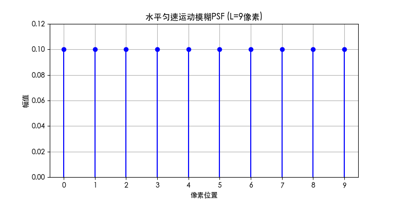

一、逆滤波
频域转换：
对退化后的图像 进行二维离散傅里叶变换（DFT），得到频域表示 。
（可选：对图像进行零填充或乘以 以中心化频谱。）
退化函数建模：
确定退化过程的点扩散函数（PSF）对应的频域传递函数 。例如：
逆滤波计算：
在频域中直接对退化函数求逆，计算原始图像的估计频谱 ：
注意事项：
逆傅里叶变换：
对 进行逆傅里叶变换，得到恢复的时域图像 ：
二、维纳滤波（Wiener Filtering）
频域转换：
对退化图像 进行傅里叶变换，得到 ，步骤同逆滤波第一步。
退化函数与噪声建模：
构造维纳滤波器：
设计频域滤波器 ：
（其中 为 的复共轭；若使用简化模型，则 。）
频域滤波：
将滤波器作用于退化图像的频谱：
逆傅里叶变换：
对 进行逆傅里叶变换，得到恢复图像 。
假设在曝光时间 内，图像传感器与场景在水平方向发生匀速直线运动，移动总距离为 个像素。此时，每个点的光强会在运动路径上均匀累积，形成矩形波形的模糊。
曲线如下所示:

曲线说明
核心代码如下：
# 获取四个角点旋转后的坐标
corners = np.array([
[0, 0],
[w-1, 0],
[0, h-1],
[w-1, h-1]
])
# 计算旋转后的坐标
cx, cy = w/2, h/2 # 原图中心
rotated_corners = []
for x, y in corners:
# 平移坐标系到中心点
x_rel = x - cx
y_rel = y - cy
# 应用旋转矩阵
x_rot = x_rel * cos_theta - y_rel * sin_theta
y_rot = x_rel * sin_theta + y_rel * cos_theta
# 移回原坐标系
rotated_corners.append([x_rot + cx, y_rot + cy])
# 遍历新图像的每个像素
for y_new in range(new_h):
for x_new in range(new_w):
# 将新坐标转换到原图坐标系
# 平移坐标系到新中心
x_rel = x_new - new_cx
y_rel = y_new - new_cy
# 应用逆向旋转矩阵
x_ori = x_rel * cos_theta + y_rel * sin_theta
y_ori = -x_rel * sin_theta + y_rel * cos_theta
# 移回原图坐标系
x_ori += cx
y_ori += cy
# 检查是否在原图范围内
if 0 <= x_ori < w and 0 <= y_ori < h:
# 双线性插值
x0 = int(math.floor(x_ori))
y0 = int(math.floor(y_ori))
x1 = min(x0 + 1, w - 1)
y1 = min(y0 + 1, h - 1)
# 计算权重
dx = x_ori - x0
dy = y_ori - y0
# 获取四个相邻像素值
val = (1 - dx) * (1 - dy) * img_array[y0, x0] + \
dx * (1 - dy) * img_array[y0, x1] + \
(1 - dx) * dy * img_array[y1, x0] + \
dx * dy * img_array[y1, x1]
rotated_img[y_new, x_new] = int(val)
得到 lena.bmp 旋转 后的结果如下图: